Processing images to generate text, such as image captioning and visual question-answering, has been studied for years. Traditionally such systems rely on an object detection network as a vision encoder to capture visual features and then produce text via a text decoder. Given a large amount of existing literature, in this post, I would like to only focus on one approach for solving vision language tasks, which is to extend pre-trained generalized language models to be capable of consuming visual signals.
I roughly group such vision language models (VLMs) into four buckets:
- Translating images into embedding features that can be jointly trained with token embeddings.
- Learning good image embeddings that can work as a prefix for a frozen, pre-trained language model.
- Using a specially designed cross-attention mechanism to fuse visual information into layers of the language model.
- Combine vision and language models without any training.
Jointly Training with Image and Text
One straightforward approach to fuse visual information into language models is to treat images as normal text tokens and train the model on a sequence of joint representations of both text and images. Precisely, images are divided into multiple smaller patches and each patch is treated as one “token” in the input sequence.
VisualBERT (Li et al. 2019) feeds both text inputs and image regions into BERT such that it is able to discover the internal alignment between images and text with self-attention mechanism.
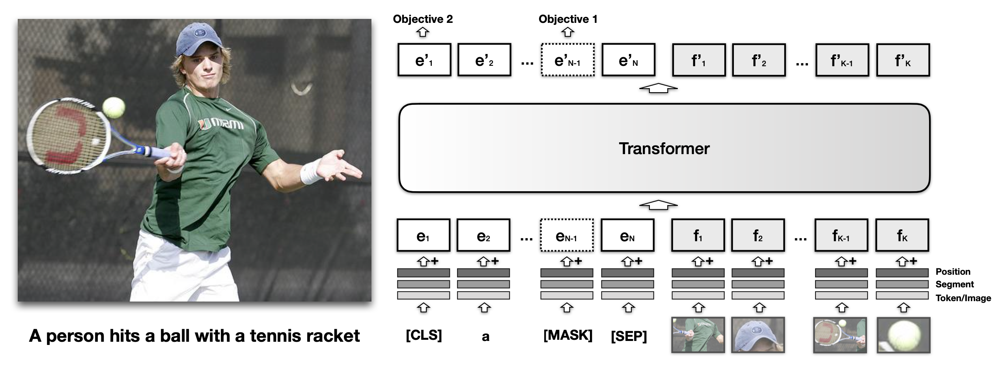Similar to text embedding in BERT, each visual embedding in VisualBERT also sums up three types of embeddings, tokenized features $f_o$, segmentation embedding $f_s$ and position embedding $f_p$, precisely:
- $f_o$ is a visual feature vector computed for a bounding region of the image by a convolutional neural network;
- $f_s$ is a segment embedding to indicate whether the embedding is for vision not for text;
- $f_p$ is a position embedding used for aligning the order of bounding regions.
The model is trained on MS COCO image caption dataset with both text and image as inputs to predict text captions, using two visually-grounded language model objectives:
- MLM with the image. The model needs to predict masked text tokens, while image embeddings always stay not masked.
- Sentence-image prediction. When provided with an image and two associated captions, one of two captions might be a random unrelated caption with 50% probability. The model is asked to distinguish these two situations.
According to ablation experiments, the most important configuration is to fuse visual information early on into the transformer layers and to pretrain the model on the COCO caption dataset. Initialization from a pre-trained BERT and the adoption of the sentence-image prediction training objective have relatively small impacts.
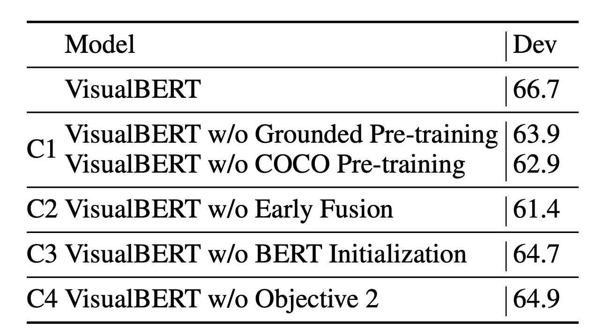(Image source: Li et al. 2019)
VisualBERT outperforms SoTA at the time on NLVR and Flickr30K, but still has some performance gap with SoTA on VQA.
SimVLM (Simple Visual Language Model; Wang et al. 2022) is a simple prefix language model, where the prefix sequence is processed with bi-directional attention like BERT, but the main input sequence only has causal attention like GPT. Images are encoded as prefix tokens such that the model can fully consume the visual information and then generates associated text in an autoregressive manner.
Inspired by ViT and CoAtNet, SimVLM splits the image into smaller patches in a flatten 1D sequence of patches. They use the convolutional stage consisting of the first 3 blocks of ResNet to extract contextualized patches and this setup is found to work better than a naive linear projection.
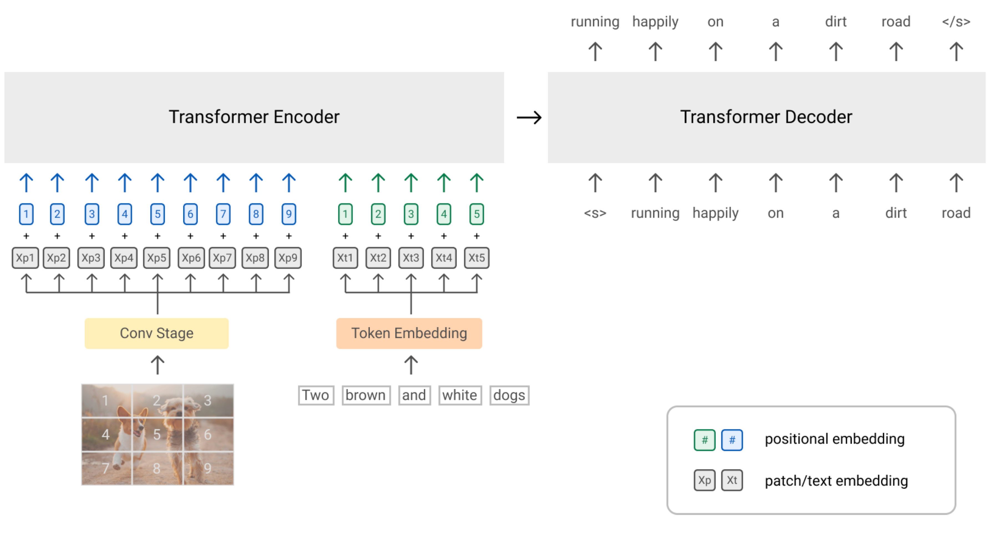Training data for SimVLM consists of a large number of image-text pairs from ALIGN (Jia et al. 2021) and text-only data from C4 dataset (Raffel et al. 2019). They mix the two pretraining datasets within each batch, containing 4,096 image-text pairs (ALIGN) and 512 text-only documents (C4).
According to ablation studies, it is important to have both image-text and text-only data for training. The PrefixLM objective outperforms both span corruption and naive LM.
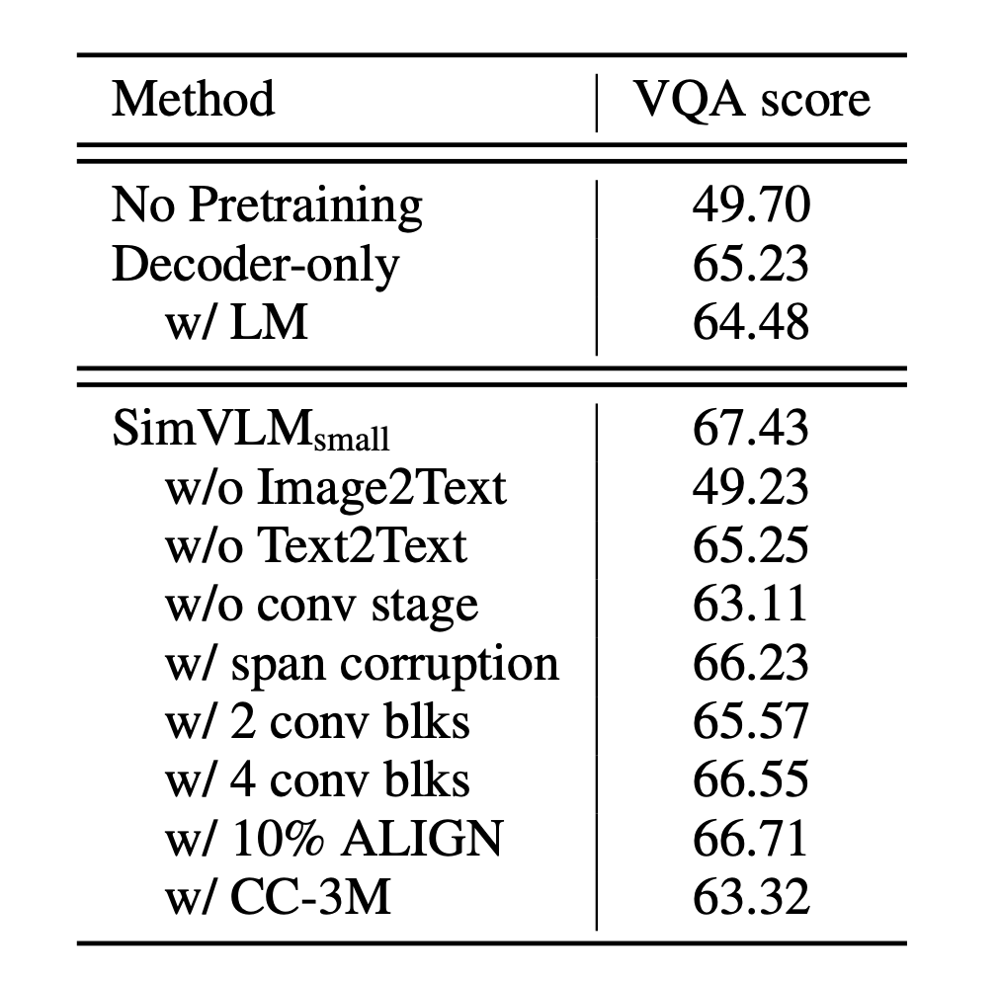(Image source: Wang et al. 2022)
CM3 (Causally-Masked Multimodal Modeling; Aghajanyan, et al. 2022) is a hyper-text language model, learning to generate the content (hypertext markup, hyperlinks and images) of large scale HTML web pages of CC-NEWS and Wikipedia articles. The resulting CM3 models can generate rich structured, multi-modal outputs while conditioning on arbitrary masked document contexts.
Architecture-wise, CM3 is an autoregressive model. However, in order to combine causal and masked language modeling, CM3 also masks out a small number of long token spans and tries to generate them at the end of the sequences.
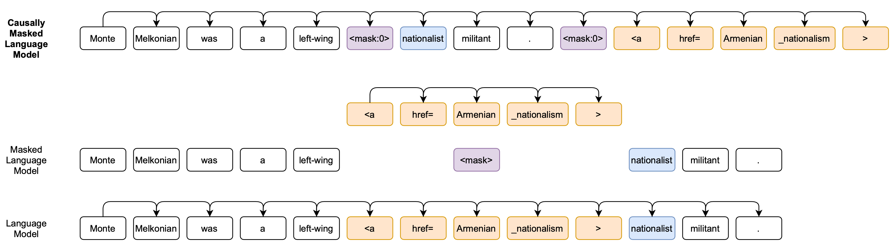(Image source: Aghajanyan, et al. 2022)
The training dataset for CM3 contains close to 1T Web data. During preprocessing, images are first downloaded from src and resized to 256 x 256 with random cropping. Then they are tokenized by VQVAE-GAN, resulting in 256 tokens per image. These tokens, joined with spaces, are inserted back into the src attribute.
CM3 can be used to complete several types of tasks by prompt engineering:
- Image in-filling:
Infilling Prompt: <img src="{prefix}<mask:0>{postfix}"><mask:0>
- Conditional image in-filling:
Conditional Infilling Prompt:
<img alt="Photo: {text}" src="{prefix}<mask:0>{postfix}"><mask:0>
- Conditional image generation:
Conditional Generation Prompt: <img alt="{prompt}
- Image captions:
Captioning Masked Prompt #1:
<img alt="Photo: A photo taken of<mask:0>" src="{image}">
Captioning Causal Prompt #1:
<img src="{image}" title="Photo: A photo taken of
- Entity disambiguation
Original: Manetho writes that these kings ruled from <a title="Memphis, Egypt">Memphis</a>
Prompt: Manetho writes that these kings ruled from <a title="<mask:0>">Memphis</a>...<mask:0>
Target: Manetho writes that these kings ruled from <a title="<mask:0>">Memphis</a>...<mask:0> Memphis, Egypt
Learned Image Embedding as (Frozen) LM Prefix
What if we don’t want to change the language model parameters when adapting it to handle visual signals? Instead we learn such an embedding space for images that it is compatible with the language model’s.
Inspired by prefix or prompt tuning, both Frozen (Tsimpoukelli et al. 2021) and ClipCap (Mokady, Hertz & Hertz, 2021) only update the parameters of the vision module during training to produce image embeddings that can work with a pretrained, frozen language model. Both are trained with aligned image caption datasets to produce the next text token in caption conditioned on the image and previous text tokens. The powerful language capability is retained by freezing LM parameters. In addition, even though such setup is trained with limited image caption data, they can also rely on the encyclopedic knowledge of the language model at test time.
The vision encoder of Frozen is based on NF-ResNet-50 and uses the final output vector of the NF-Resnet after the global pooling layer. The Frozen VLM can be used as a multi-model few-shot learner to adapt to new tasks at test time for zero-shot or few-shot transfer with a sequence of interleaved images and text.
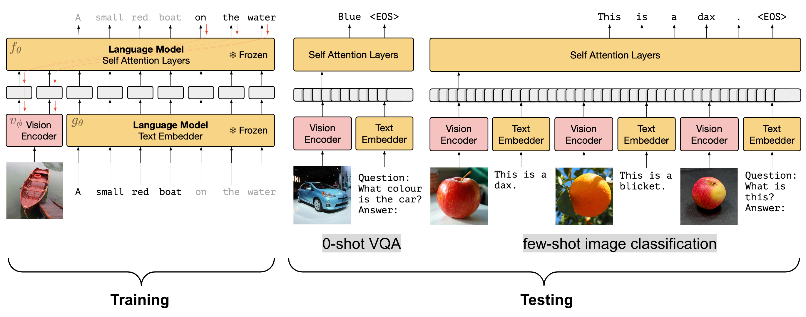Experiments showed that fine-tuning the pre-trained LM interestingly leads to worse performance on VQA tasks. It is important to initialize the language model from a pre-trained version, as training from scratch (${Frozen}_\text{scratch}$) does not show any meaningful progress. The baseline ${Frozen}_\text{train-blind}$ blacks out the image but still can achieve decent performance because of the innate power of the pre-trained LM.
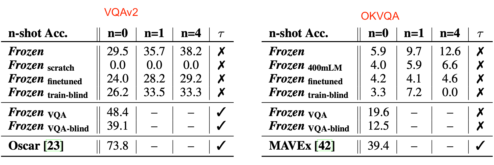ClipCap relies on CLIP (Radford et al. 2021) for vision encoding, but it needs to be processed by a light mapping network $F$ such that image embedding vectors are translated into the same semantic space as the pre-trained LM. The network $F$ maps CLIP embeddings into a sequence of $k$ embedding vectors, each with the same dimension as a word embedding in GPT2. Increasing the prefix size $k$ helps improve the performance. Both CLIP vision encoder and the LM are frozen during training and only the mapping network $F$ is learned. They found that when LM is frozen, $F$ should be a transformer, with 8 multi-head self-attention layers with 8 heads each, but when LM can be fine-tuned, a MLP is enough.
Even though ClipCap only trains such a minimum set of parameters, it still achieves decent performance on image captioning tasks, comparable with SoTA at the time (e.g. Oscar, VLP, BUTD). Hence they postulate that “the CLIP space already encapsulates the required information, and adapting it towards specific styles does not contribute to flexibility.”
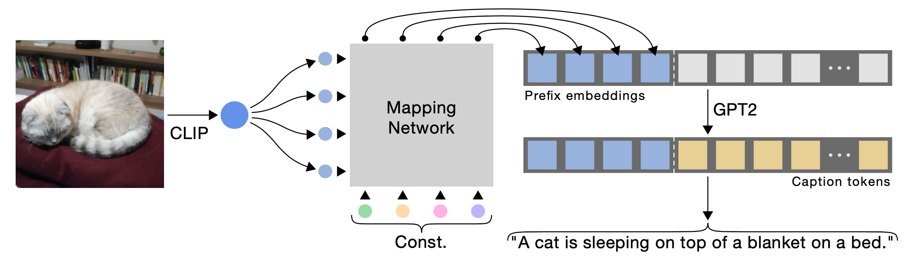The fun fact is - because ClipCap translates CLIP image embeddings into LM space, the processed prefixes can be even interpreted as words.
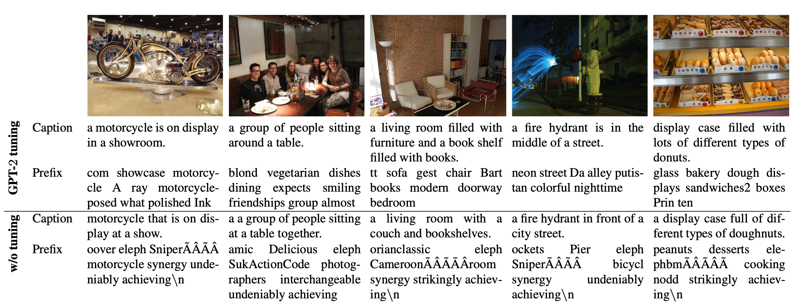Text-Image Cross-Attention Fuse Mechanisms
To more efficiently fuse visual information into different layers of the language model, we can consider a specially designed cross-attention fuse mechanism to balance the mixture of text generation capacity and visual information.
VisualGPT (Chen et al. 2021) employs a self-resurrecting encoder-decoder attention mechanism to quickly adapt the pre-trained LM with a small amount of in-domain image-text data.
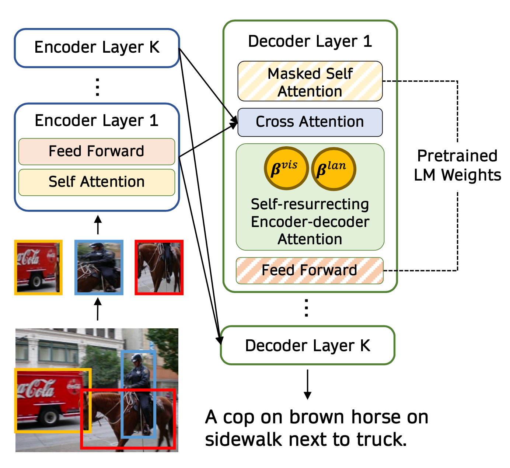Let $I$ be the output of a visual encoder and $H$ be the hidden state of the LM decoder. VisualGPT introduced a self-resurrecting activation unit (SRAU) to control the tradeoff between a mixture of pre-trained linguistic information $H$ and visual component, $\text{EncDecAttn}(H, I)$ via two complementary gates $B^\text{vis}$ and $B^\text{lan}$:
$$ \begin{aligned} & B^\text{vis} \otimes \text{EncDecAttn}(H, I) + B^\text{lan} \otimes H \\ \text{where } & B^\text{vis}[i,j] = \sigma(H[i,j]) \mathbb{1}[\sigma(H[i,j]) > \tau] \\ & B^\text{lan}[i,j] = (1 - \sigma(H[i,j])) \mathbb{1}[1 - \sigma(H[i,j]) > \tau] \\ \end{aligned} $$ where $\otimes$ is element-wise multiplication and $[i,j]$ denotes one element in the matrix. $\tau$ is a predefined threshold hyperparameter.
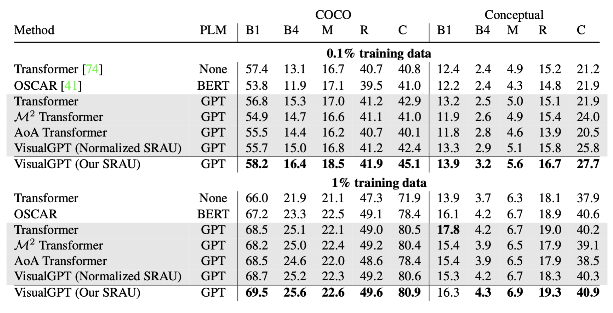VC-GPT (Visual Conditioned GPT; Luo et al. 2022) combines a pretrained visual transformer (CLIP-ViT) as visual encoder and a pretrained LM as language decoder.
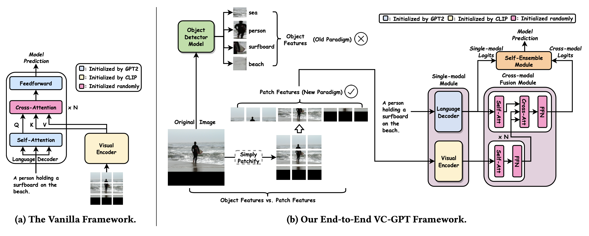(Image source: Luo et al. 2022)
The CLIP-ViT takes a sequence of image patches as inputs and outputs representation for each patch. To avoid catastrophic forgetting, instead of injecting the visual information directly into GPT2, VC-GPT introduces extra cross-attention layers on top of the output of visual encoder and language decoder. Then a self-ensemble module linearly combines the single model language decoder logits $h^G$ and cross-model vision-language fused module logits $h^\text{fuse}$. The self-ensemble module (see “VC-GPT w/o SE” in Fig. 13) is important for the performance.
$$ \text{logits} = W^G h^G + W^\text{fuse}h^\text{fuse} $$
where $W^G$ is a linear projection of the language decoder, initialized by the word embedding matrix of GPT2 and $W^\text{fuse}$ is a linear projection of the fusion module and initialized randomly.
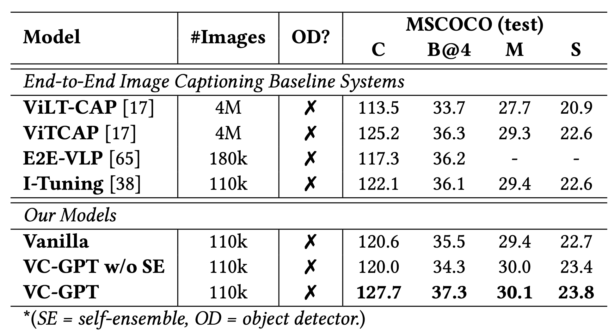MERLOT (Zellers, et al. 2021) is trained with 6 millions of YouTube videos with transcribed speech (YT-Temporal-180M) to learn both spatial (frame-level) and temporal (video-level) objectives and demonstrated strong performance on VQA and visual reasoning tasks when fine-tuned.
Each video $\mathcal{V}$ is split into multiple segments $\{ \boldsymbol{s}_t \}$, each segment $\boldsymbol{s}_t$ containing an image frame $\mathbf{I}_t$ extracted from the middle timestep and $L=32$ tokens of words associated. Images are encoded by a learned image encoder and words are encoded using a learned embedding. Then both are encoded together within a joint vision-language transformer.
There are 3 learning objectives in MERLOT:
- Masked language modeling (MLM) is useful especially because in videos, people tend to ramble, resulting in many repeated keywords or filler words.
- Contrastive frame-caption matching uses the language-only part from the joint vision-language transformer. Matched representations for each frame $\mathbf{I}_t$ and caption $\boldsymbol{w}_t$ are treated as positive examples, while the negative examples come from all other frame-caption pairs in the minibatch.
- Temporal reordering learns temporal reasoning: scramble random $i$ frames and replace the segment-level position embeddings with a random and unique position embedding. The random position embeddings are learned, allowing the model to unshuffle these “‘shuffled’” frames conditioned on correctly-ordered ones. The loss is to predict whether $t_i < t_j$ or $t_j < t_i$ for each frame-frame pair.

Ablation studies showed that it is important to (1) train on videos instead of images, (2) scale up the size and diversity of the training dataset and (3) use diverse objectives to encourage full-stack multimodal reasoning.
Flamingo (Alayrac et al. 2022) is a visual language model that accepts text interleaved with images/videos and outputs free-form text. Flamingo connects a pretrained LM and a pretrained vision encoder (i.e. CLIP image encoder) via a transformer-based mapper. To more efficiently incorporate vision signals, Flamingo adopts a Perceiver-based architecture to produce a few hundreds of tokens out of a large number of visual input features and then use cross-attention layers interleaved with the LM layers to fuse visual information into the language decoding process. The training objective is an autoregressive, NLL loss.
- The Perceiver resampler receives spatio-temporal features from the vision encoder of image/video inputs to produce fixed-size visual tokens.
- The frozen LM is equipped with newly initialized cross-attention layers interleaved between the pretrained LM layers. Thus the LM can generate text conditioned on the above visual tokens.
Similar to ClipCap, both pretrained models are frozen during training and thus Flamingo is only trained to harmoniously connect existing, powerful language and vision models together. Tha main difference between ClipCap and Flamingo is that the former treats the image embedding as simple prefix for LM, while the latter uses the gated cross-attention-dense layer to fuse image information. In addition, Flamingo incorporates a lot more training data than ClipCap.
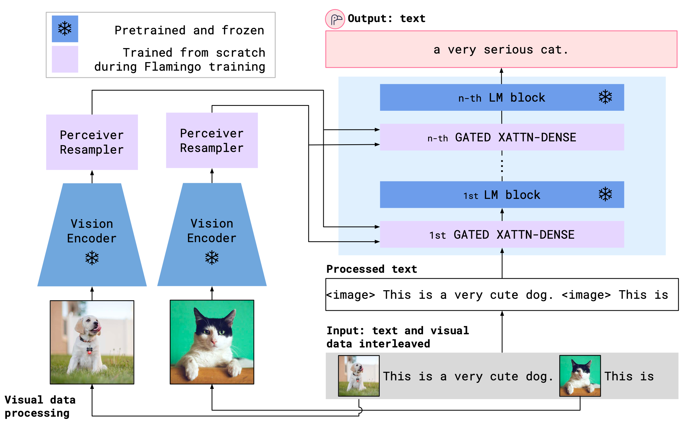To easily handle text with interleaved images, masking in Flamingo is designed such that text token only cross-attends to visual tokens corresponding to the last preceding image, largely reducing the number of visual tokens that a certain text token can see. They found this works better than allowing text tokens to attend to all preceding images directly. Text still can attend to all previous images because there is a causal self-attention dependency in the text encoder. This design can deal with an arbitrary number of images in the context.
They scraped 43 million webpages from the Internet, named MultiModal MassiveWeb (M3W) dataset, containing text with interleaved images. In addition, Flamingo is also trained on paired image/text and video/text datasets, including ALIGN, LTIP and VTP.
Data processing of the Internet dataset includes:
- The input Web page text is processed by inserting
<image>tags at the location of visual inputs, as well as special tokens,<BOS>(beginning of sentence) and<EOC>(end of chunks; always at the end of the document, before any image tag). - From each document, they sample a random subsequence of $L = 256$ tokens and take up to $N = 5$ images included in the sampled sequence (using only the first $N$ within that sampled subsequence if there are more, or padding to $N$ if fewer)
- A function $\phi: [1,L] \to [0,N]$ is computed to track the text and image interleaving order, which assigns to each text position the index of the last image/video appearing before this position; 0 if no preceding visual data.
Since Flamingo is trained on a mixture of three different datasets, it optimizes for a weighted sum of dataset-specific NLL losses. Tuning the dataset weights is very important for the final performance. In practice, instead of round-robin between datasets, they actually sample one batch from each dataset and apply a weighted sum of these gradients in each update. Gradient accumulation across different heterogeneous datasets can be viewed as a mean to stabilize training, as it reduces the gradient variance between each update.
At test time, Flamingo naturally supports few-shot learning since it can work with any sequence of interleaved text and images. And more examples in the context contribute to better performance.
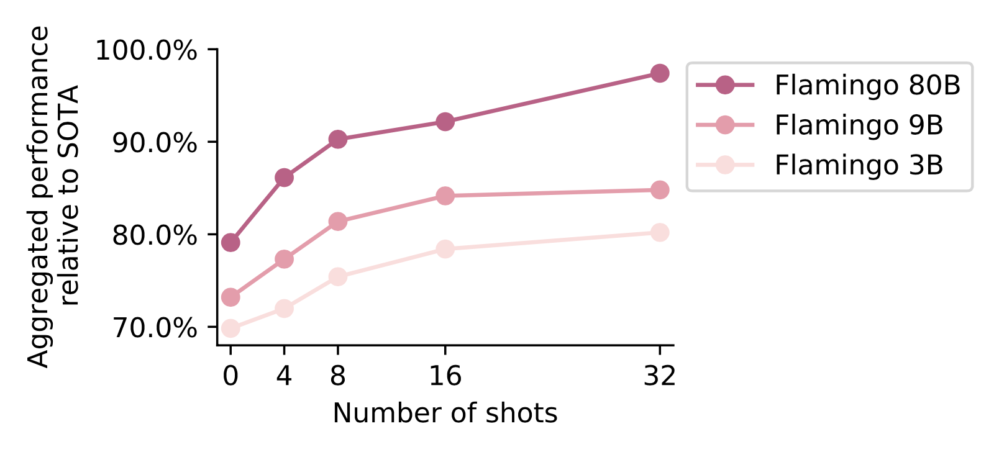Flamingo outperforms SoTA fine-tuned models on 6 out of the 16 tasks despite even when not using any fine-tuning but only few-shot prompting. Fine-tuning Flamingo is expensive and it is difficult to do hyperparemeter tuning, but it does lead to better results.
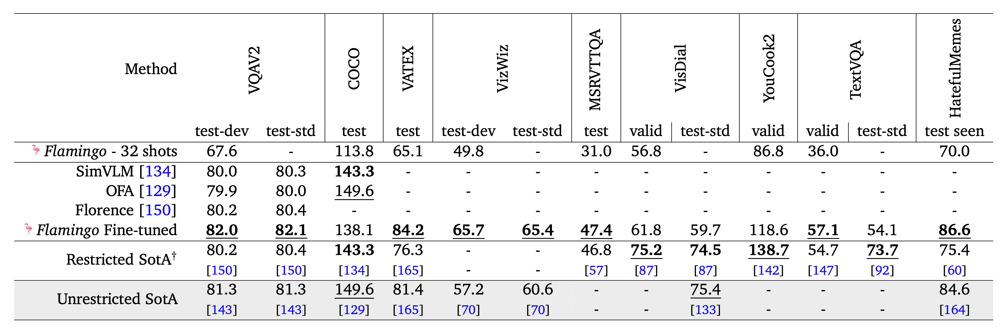CoCa (Contrastive Captioner; Yu & Wang et al., 2022) captures both the merits of contrastive learning and image-to-caption generation. It is a model jointly trained with contrastive loss on CLIP-style representation and generative loss on image captioning, achieving SoTA zero-shot transfer on a variety of multi-modal evaluation tasks.
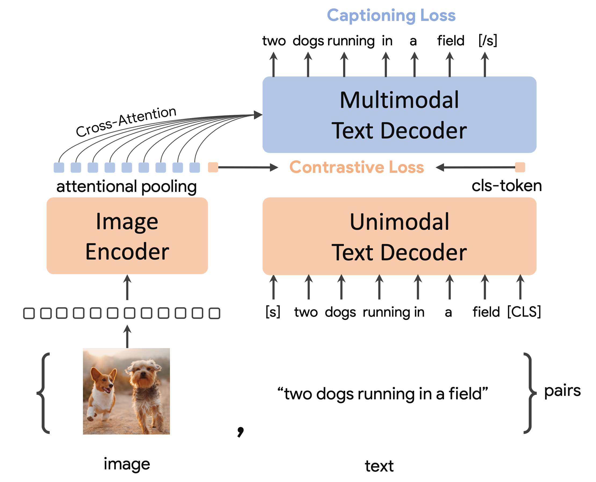(Image source: Yu & Wang et al., 2022)
CoCa is pretrained from scratch, using web-scale alt-text data ALIGN and annotated images by treating all labels as texts in JTB-3B.
There are two major training components in CoCa. The final loss is a weighted sum of the following two losses, with weight scalars $\lambda_\text{cap}=2.0, \lambda_\text{con} = 1.0$.:
- $\mathcal{L}_\text{con}$ - Dual-encoder contrastive learning optimizes the symmetric contrastive learning loss, similar to CLIP.
- $\mathcal{L}_\text{cap}$ - Encoder-decoder captioning has the decoder predict the caption based on the latent encoded features from the image encoder, by optimizing an autoregressive loss. The text decoder is decoupled into two components, unimodal and multimodal; a good balance is to split the decoder by half for these two components:
- The bottom unimodal component encodes the input text with causally-masked self-attention.
- The top multimodal component applies both causally-masked self-attention and cross-attention to the output of the vision encoder.
CoCa performs better than the contrastive-only model and on par with the captioning-only model on VQA. Captioning loss is found to be beneficial to the zero-shot classification capacity too.
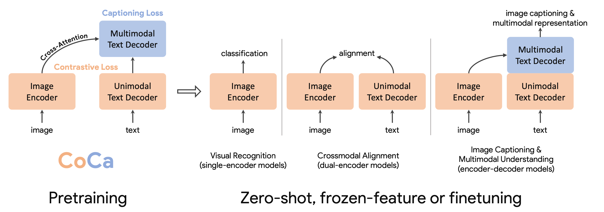They use task-specific attention pooling, or attention pooler, as a natural task adapter, as they found that a single pooled image embedding helps visual recognition tasks (e.g. ImageNet classification), while a more fine-grained embedding helps multimodal understanding tasks (e.g. VQA). A pooler is a single multi-head attention layer with $n_\text{query}$ learnable queries (note that $\mathbf{X} \in \mathbb{R}^{L \times d}$, $\mathbf{W}^q \in \mathbb{R}^{d \times d_q}$, and $d_k = d_q$), with the encoder output as both keys and values. CoCa uses attentional poolers in pretraining for generative loss $n_\text{query} = 256$ and contrastive loss $n_\text{query} = 1$. This enables the model to obtain strong performance as a frozen encoder where we only learn a new pooler to aggregate features.
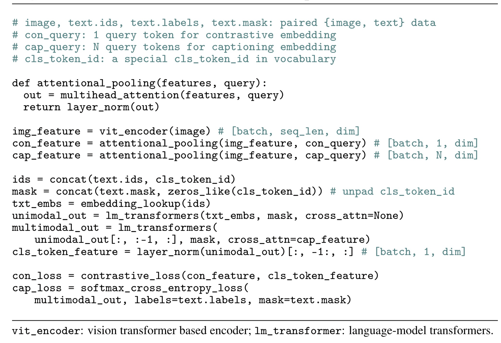(Image source: Yu & Wang et al., 2022)
No Training
Finally it is possible to solve vision language tasks by stitching pretrained language and vision models together without training any additional parameters.
Decoding Guided with Vision-based Scores
MAGiC (iMAge-Guided text generatIon with CLIP; Su et al. 2022) does guided decoding according to a CLIP-based score named magic score to sample the next token, without fine-tuning. The generated text is encouraged to be relevant to the given image, while still stay coherent to the previously generated text.
The next token $x_t$ at a time step $t$ is selected according to the following equation. Model confidence and degeneration penalty (Su et al. 2022) are added to avoid corrupted generation from LM.
$$ \begin{aligned} & x_t = \arg\max_{v \in \mathcal{V}^{(k)}} \big\{ (1-\alpha) \underbrace{p(v \vert \boldsymbol{x}_{<t})}_\text{model confidence} - \alpha \underbrace{\max_{1 \leq j \leq t-1} { \text{cosine}(h_v, h_{x_j})}}_\text{degeneration penalty} + \beta \underbrace{f_\text{magic}(v \vert \mathcal{I}, \boldsymbol{x}_{<t}, \mathcal{V}^{(k)})}_\text{magic score} \big\} \\ \text{where } & f_\text{magic} ( v \vert \mathcal{I}, \mathbf{x}_{<t}, \mathcal{V}^{(k)} ) = \frac{ \exp(\text{CLIP}(\mathcal{I}, [\boldsymbol{x}_{<t}:v])) }{ \sum_{z \in \mathcal{V}^{(k)}} \exp(\text{CLIP}(\mathcal{I}, [\boldsymbol{x}_{<t}:z])) } = \frac{ \exp\big({h^\text{image}(\mathcal{I})}^\top h^\text{text}([\boldsymbol{x}_{<t}:v])\big) }{ \sum_{z \in \mathcal{V}^{(k)}} \exp\big({h^\text{image}(\mathcal{I})}^\top h^\text{text}([\boldsymbol{x}_{<t}:z])\big) } \end{aligned} $$
where $\mathcal{I}$ is the input image; $\mathcal{V}^{(k)}$ contains top-$k$ possible tokens predicted by the language model $p$; $\boldsymbol{x}_{<t}$ refers to the past generated tokens before time step $t$; $h_v$ is the representation of the token $v$ computed by LM conditioned on the concatenation of $\boldsymbol{x}_{<t}$ and $v$; $h^\text{image}(.)$ and $h^\text{text}(.)$ are embeddings generated by CLIP image and text encoders, respectively.
MAGiC has decent performance compared to other unsupervised approaches, but still has big gaps with supervised methods.
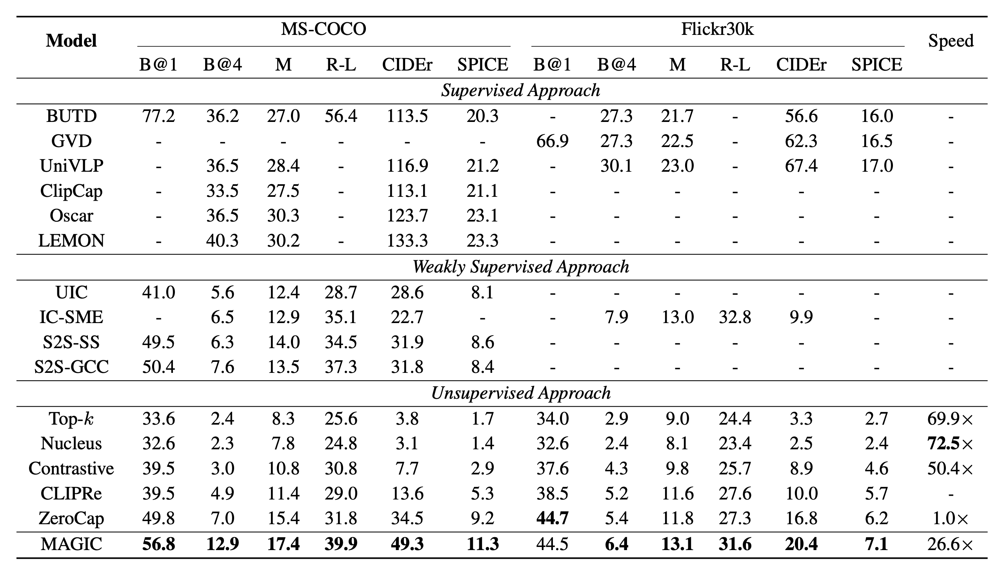Language as Communication Interface
For knowledge-based VQA tasks, PICa (Prompts GPT-3 via the use of Image Captions; Yang et al. 2021) first converts the images into captions or tags and then uses few-shot examples to prompt GPT3 to provide answers. Image captions or tags are extracted by some existing models (e.g. VinVL) or Azure Tagging API. And GPT3 is considered as an unstructured, implicit knowledge base.
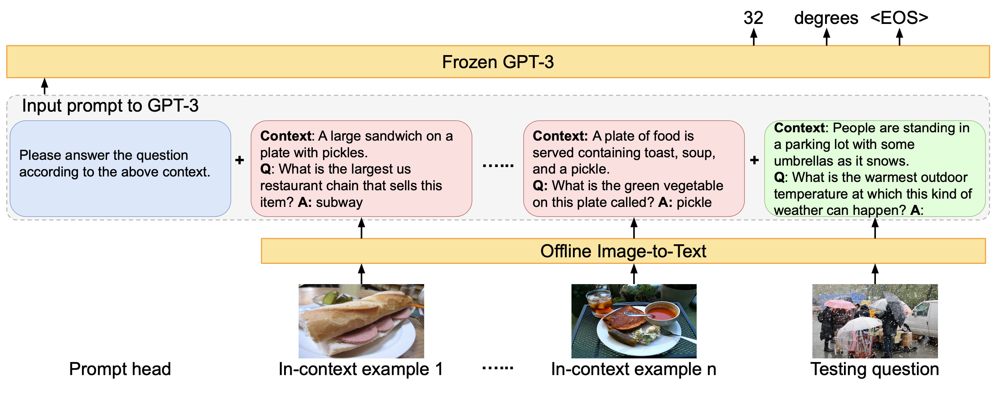PICa explored two ways to improve few-shot examples to achieve better results:
- In-context examples are selected based on how similar they are to the question using CLIP embedding.
- Multi-query ensembling is to prompt the model multiple times to get multiple answers and the one with highest logprob is selected.
This simple approach with only 16 examples improved SoTA on OK-VQA by +8.6 points and got decent performance on VQAv2.
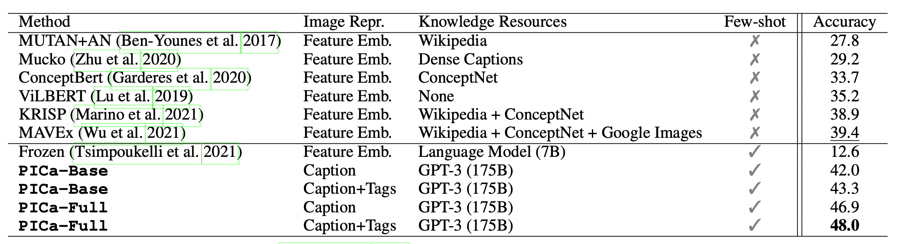Socratic Models (SM) (Zeng et al. 2022) is a framework to compose multiple pretrained models for different modality via language (prompting) into one model without further training. Here language is considered as the intermediate representation by which different models can exchange information. The key idea is to use multi-model multimodal prompting, in which output of a non-language model is inserted into a language prompt and then it is used for LM for reasoning.
Let’s examine a concrete example. Given an ego-centric video (images + audio), SM can produce a summary of the person’s activity using text-to-text LM, image-to-text VLM and speech-to-text ALM. They are chained as follows:
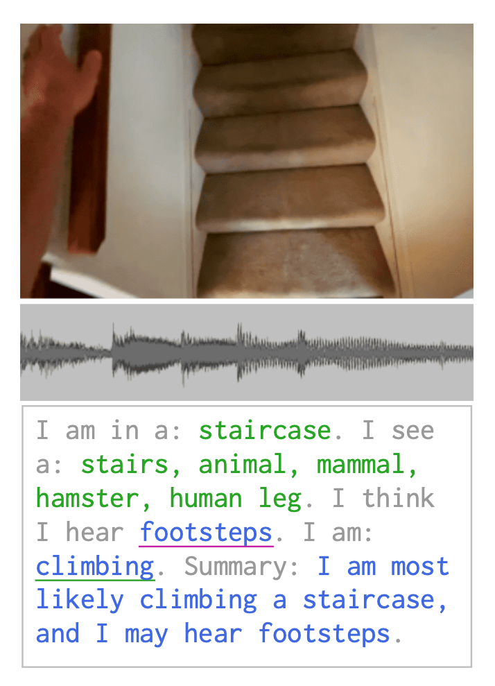- the VLM detects visual entities;
- the LM suggests sounds that may be heard;
- the ALM chooses the most likely sound;
- the LM suggests possible activities;
- the VLM ranks the most likely activity;
- the LM generates a summary of the Socratic interaction.
SM can generate image captions by first using VLM to zero-shot predict different place categories, object categories, image type and the number of people; and then the VLM-filled language prompt is fed into a causal LM to generate caption candidates. The Socratic approach still has performance gap with ClipCap on image captioning but pretty decent given it does not involve any training.

SM framework is very flexible and can be used on a lot more complicated tasks other than image captions. For example, the egocentric perception (User inputs + VLM + LM + ALM) task is to take as inputs egocentric videos to (1) summarize content; (2) answer free-form reasoning questions; (3) and do forecasting.
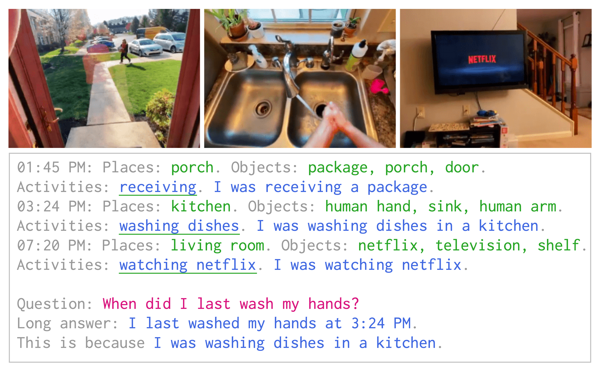Datasets
Image Caption Datasets
- MS COCO (Chen et al. 2015): contains 328K images and each paired with 5 independent captions.
- NoCaps (Agrawal et al., 2019) is designed to measure generalization to unseen classes and concepts, where in-domain contains images portraying only COCO classes, near-domain contains both COCO and novel classes, and out-of-domain consists of only novel classes.
- Conceptual Captions (Sharma et al. 2018) contains 3 million pairs of images and captions, mined from the web and post-processed. To focus on the concepts, specific entities in this dataset are replaced with general notions (e.g. a politician’s name is replaced with “politician”)
- Crisscrossed Captions (CxC) (Parekh et al. 2021) contains 247,315 human-labeled annotations including positive and negative associations between image pairs, caption pairs and image-caption pairs.
- Concadia (Kreiss et al. 2021) is a Wikipedia-based dataset containing 96,918 images with corresponding English-language descriptions, captions, and surrounding context.
Pair Image-Text Datasets
(*) Not a public dataset.
- ALIGN (Jia et al., 2021) contains 1.8 billion images with alt-text. The dataset is large but noisy with only minimal frequency-based filtration.
- (*) LTIP (Long text & image pairs; Alayrac et al. 2022): 312 million images, paired with descriptive captions.
- (*) VTP (Video & text pairs; Alayrac et al. 2022): 27 million short videos (~22 seconds on average), paired with descriptive captions.
- (*) JFT-300M / JFT-3B are internal Google datasets, containing 300M / 3B images annotated with a class-hierarchy of around 30k labels via a semi-automatic pipeline. Thus the data and associated labels are noisy.
Evaluation Tasks
Visual Question-Answering
Given an image and a question, the task is to correctly answer the question.
- VQAv2 (Goyal et al., 2017) contains 1+ million questions about 200K images from COCO.
- OK-VQA (Marino et al. 2019) contains 14K open-ended questions that require outside knowledge (e.g. from Wikipedia).
- A-OKVQA: the augmented successor of OK-VQA, with no overlapped questions with OK-VAQ.
- TextVQA (Singh, et al. 2019) contains 45,336 questions on 28,408 images that require reasoning about text to answer.
- VizWiz (Gurari, et al. 2018) contains over 31,000 visual questions originating from blind people who each took a picture using a mobile phone and recorded a spoken question about it, together with 10 crowdsourced answers per visual question.
Visual Language Reasoning
- VCR (Visual Commonsense Reasoning; Zellers et al. 2018) contains 290k multiple choice QA questions derived from 110k movie scenes, with focus on visual commonsense.
- NLVR2 (Natural Language for Visual Reasoning; Suhr et al. 2019) contains 100k+ examples of sentences paired with web images and the task is to determine whether a natural language caption is true about a pair of images, with a focus on semantic diversity.
- Flickr30K (Jia et al. 2015) contains 30k images collected from Flickr and 250k annotations and the task is to select the bounding regions given spans of a sentence.
- SNLI-VE (Visual Entailment; Xie et al. 2019) is built on top of SNLI and Flickr30K and the task is to reason about the relationship between an image premise and a text hypothesis.
Video QA and Understanding
- MSR-VTT (MSR Video to Text; Xu et al. 2016) contains 10K web video clips with 41.2 hours and 200K clip-sentence pairs in total; the task is to translate videos to text.
- ActivityNet-QA (Yu et al. 2019) contains 58,000 human-annotated QA pairs on 5,800 videos derived from the popular ActivityNet dataset.
- TGIF (Tumblr GIF; Li et al. .2016) contains 100K animated GIFs and 120K sentences describing visual content of the animated GIFs, randomly selected posts published between May and June of 2015 on Tumblr.
- TGIF-QA contains 165K QA pairs for the animated GIFs from the TGIF dataset.
- LSMDC (Large Scale Movie Description Challenge; Rohrbach et al. 2015) contains 118,081 short video clips extracted from 202 movies. Each video has a caption, either extracted from the movie script or from transcribed DVS (descriptive video services) for the visually impaired.
- TVQA (Lei et al. 2018) / TVQA+ (Lei et al. 2019) is a large-scale video QA dataset based on 6 popular TV shows (Friends, The Big Bang Theory, How I Met Your Mother, House M.D., Grey’s Anatomy, Castle). It consists of 152.5K QA pairs from 21.8K video clips, spanning over 460 hours of video.
- DramaQA (Choi et al. 2020) is a large-scale video QA dataset based on a Korean popular TV show, “Another Miss Oh”. This dataset contains four levels of QA on difficulty and multi-level character-centered story descriptions.
- VLEP (Video-and-Language Event Prediction; Lei et al. 2020) contains 28,726 future event prediction examples (along with their rationales) from 10,234 diverse TV Show and YouTube Lifestyle Vlog video clips.
Citation
Cited as:
Weng, Lilian. (Jun 2022). Generalized visual language models. Lil’Log. https://lilianweng.github.io/posts/2022-06-09-vlm/.
Or
@article{weng2022vlm,
title = "Generalized Visual Language Models",
author = "Weng, Lilian",
journal = "Lil'Log",
year = "2022",
month = "Jun",
url = "https://lilianweng.github.io/posts/2022-06-09-vlm/"
}
References
[1] Li et al. “VisualBERT: A Simple and Performant Baseline for Vision and Language.” arXiv preprint:1908.03557 (2019).
[2] Wang et al. “SimVLM: Simple Visual Language Model Pretraining with Weak Supervision.” ICLR 2022.
[3] Aghajanyan, et al. “CM3: A Causal Masked Multimodal Model of the Internet.” arXiv preprint arXiv: 2201.07520 (2022).
[4] Tsimpoukelli et al. “Multimodal Few-Shot Learning with Frozen Language Models.” NeuriPS 2021.
[5] Mokady, Hertz & Hertz. “ClipCap: CLIP Prefix for Image Captioning.” 2021.
[6] Chen et al. “VisualGPT: Data-efficient Adaptation of Pretrained Language Models for Image Captioning.” arXiv preprint arXiv:2111.09734 (2021).
[7] Luo et al. “A Frustratingly Simple Approach for End-to-End Image Captioning.” arXiv preprint arXiv:2201.12723 (2022).
[8] Zellers et al. “MERLOT: Multimodal neural script knowledge models.” NeuriPS 2021.
[9] Alayrac et al. “Flamingo: a Visual Language Model for Few-Shot Learning.” arXiv preprint arXiv:2204.14198 (2022).
[10] Yu & Wang et al. “CoCa: Contrastive Captioners are Image-Text Foundation Models.” arXiv preprint arXiv:2205.01917 (2022).
[11] Yang et al. “An Empirical Study of GPT-3 for Few-Shot Knowledge-Based VQA.” arXiv preprint arXiv:2109.05014 (2021).
[12] Su et al. “Language models can see: Plugging visual controls in text generation.” arXiv preprint arXiv:2205.02655 (2022).
[13] Zeng et al. “Socratic Models: Composing Zero-Shot Multimodal Reasoning with Language.” arXiv preprint arXiv:2204.00598 (2022).